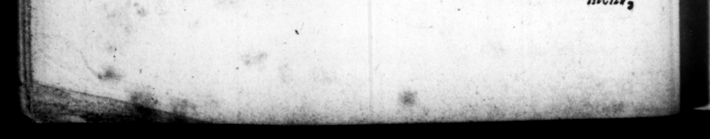

_ —c_ — — — : DES — — — — rr 2 —— , , , , = * * + C 5 Put notwithſtanding this great and apparent Uſefulneſs a ** . ah Ws : - = =o L | = The PR E F A C E. * Sun ron vs, be bas, I think, got but little Footing in our. Schools ; which is owing, I preſume, to the Difficulty juſt zaken Notice of in him. But as that is now in a great _ meaſure removed, by thus publiſhing him with a Tranſlation, I bope be may, for the future, meet with more reſpectſul and Lana ire from the Teachers of the Lin Tongue. am ſure they will find their own Account in a civil RecepZion of him in this Dreſs, with Regard to their Eaſt and Credit both. I do not indeed pretend ro have cleared up all the Difficulties in bim by my Tranſlation ; that is impoſſible to be done in ſuch an Author, ſo full of Hints and Touches upon antient Rites and Cuſtoms : And therefore I aas once minded to have given him to the Publick in a different Form, with large Notes and Reflections upon him. But conſidering that the Price of ſuch a Book, would be a great Obſtacle to its Admiſſion into our Schools, to which I auas deſirous to recommend ſo uſeful an Author, I laid aſide hat Project, yet not ſo entirely, but that I may poſſibly refume it again ſome time or other, if I can find Leiſure and ſuitable Encouragement for it. The Hook, in its preſent Form, 2vill, I hope, be found exceeding uſeful, not only in our Schools, vut out of them too, to ſuch Gentlemen as are defirons to improve themſelves in the Language and Hiſtory of the Romans together. With Reſpect ro ſuch Difficulties as no Tranſſation can effeftually and thoroughly clear up, the Reader may have Recourſe to KENNET's or Ros IN us's Antiquities : One of which Books, if not both, all that © medale with the Study of the Latin Tongue, ſbould be ſure to be provided with. Nay, as KENNET 's is but a compendious Sten, it would be proper for a Reader, that pas little or no Knowledge of Antiquity, to give that Book a caveſul Peruſal more than once, before be undertakes the Reading of SUE TONIUS. T he great Uſefulneſs of the Claſſick Authors, publiſhed ith nuſt and proper Tranſlations, 1s ſo very apparent, that I aconder 1:0 Body has attempted any thing of this kind before me. Engliſh Tranſlations indeed of many of them have been publiſhed by themſelves, as being deſigned I ſuppoſe purely for the Uſe of ſuch as are wholly ignorant of the Latin Tongue, by preſenting them, for their Information or Amuſtment,
